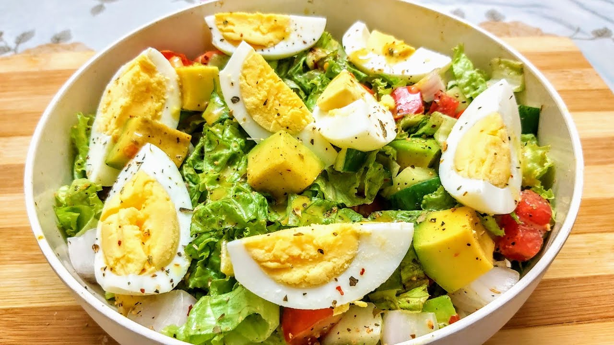

Egg Salad III

Description
is a great egg salad recipe that a woman I babysat for made!
The key ingredient is the chopped pimento stuffed olives.
Serve on toasted bread with lettuce and a bit of chopped celery.
Ingredients
- 8 eggs
- ½ cup mayonnaise
- 1 teaspoon ground black pepper
- ¼ teaspoon paprika
- 2 tablespoons chopped pimento-stuffed green olives
Steps
- Place eggs in a medium saucepan with enough cold water to cover,
and bring to a boil. Cover saucepan, remove from heat,
and let eggs stand in hot water for 10 to 12 minutes.
Remove from hot water, cool, peel, and chop.
-
In a large bowl, mix eggs, mayonnaise, pepper, and paprika.
Mash with a potato masher or fork until smooth.
Gently stir in the olives. Refrigerate until serving.